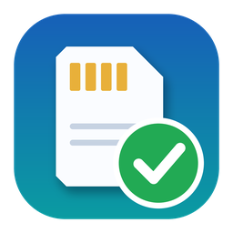

Offload zálohuje kamerové karty. Kartu přečte jen jednou a každý blok dat zapíše zároveň na všechny zvolené cílové disky. Potom kopie na každém disku přečte zpátky a porovná kontrolní součty. Teprve když všechno sedí, řekne, že kartu lze vysunout.
<cíl>\<datum>\<karta>\. Struktura složek
karty zůstane stejná, datum a čas změny souborů jsou jako na kartě._REPORT na každém cíli: HTML, PDF, JSON, TXT a seznam kontrolních součtů,
k tomu ASC MHL ve složce ascmhl..mov pro střih, s LUTem, s vypáleným názvem klipu a timecodem,
do složky _PROXY.bin\offload.exe pro skripty (kapitola 11).Offload-win-x64-<verze>.zip do obyčejné složky (např. Dokumenty\Offload).
Nespouštějte aplikaci přímo z archivu.Offload.exe. První start trvá o pár sekund déle (rozbalí se knihovny), další už ne.Offload.exe. Aplikace se otevře
a složka bude v seznamu Karty rovnou zaškrtnutá.| Soubor / složka | K čemu |
|---|---|
Offload.exe | aplikace |
bin\offload.exe | příkazová řádka (offload --help) |
bin\braw-decode.exe | dekodér Blackmagic RAW (knihovnu Blackmagic nepřibaluje) |
bin\ffmpeg.exe, bin\ffprobe.exe | FFmpeg — proxy, náhledy, metadata klipů (licence GPL v3, viz licence\ffmpeg) |
luts\ | vestavěné LUTy Log → Rec.709 pro proxy a náhledy (11 souborů .cube) |
licence\ | licence přibalených programů a popis LUTů |
CTI-ME.txt | krátký návod ke spuštění |
Offload-navod.pdf | tento návod |
| Formát | Co je potřeba | Bez doplňku |
|---|---|---|
Blackmagic RAW (.braw) |
knihovna Blackmagic RAW — stačí nainstalovat zdarma Blackmagic RAW Player (blackmagicdesign.com, sekce Support), nebo mít DaVinci Resolve | klipy se jen zkopírují a ověří, bez proxy a náhledů |
RED (.R3D) | REDline z balíku REDCINE-X PRO | klipy se jen zkopírují a ověří |
ARRIRAW (.ari, .mxf) | ARRI Reference Tool (art-cmd) | klipy se jen zkopírují a ověří |
Nainstalované nástroje Offload najde sám ve standardních umístěních; jinou cestu lze zadat v sekci Dekodéry hlavního okna (kapitola 3). Podpora RED a ARRIRAW je v aplikaci hotová, ale zatím nebyla vyzkoušená se skutečnými nástroji výrobců.
| Soubor | Obsah |
|---|---|
%APPDATA%\Offload\settings.json | nastavení: seznam cílů, volby, proxy, cesty k nástrojům, názvy USB portů |
%APPDATA%\Offload\app.log | log aplikace (hodí se při hlášení chyby) |
%APPDATA%\Offload\hwtest.json | výsledek posledního testu USB portů |
Do Průzkumníka stačí do adresního řádku napsat %APPDATA%\Offload.
Smažte složku s aplikací. Nastavení zůstane v %APPDATA%\Offload, dokud ho nesmažete.
Okno má nahoře menu Nástroje, vlevo panel s nastavením offloadu a dole tlačítko Spustit offload, vpravo Fronta s kartami běžících a hotových úloh. Šířku obou panelů lze měnit tažením dělicí čáry. Vzhled (světlý / tmavý) se řídí nastavením Windows.
A001 (E:)), obsazené místo a souborový systém.
Disk, který nevypadá jako kamerová karta, má navíc „nevypadá jako karta“ a sám se nezaškrtne.
Za kartu se považuje médium se složkami typu DCIM, PRIVATE, CLIP,
CONTENTS, XDROOT, M4ROOT apod. nebo s klipy (.braw, .r3d,
.mxf, .mov, .mp4, .ari, .crm…) nejvýš o složku níž.%APPDATA%\Offload\history.json), kopie zrušená uprostřed se do ní nezapíše.A001C003_… → A001, pod polem „podle názvů klipů (A001C003…)“); u karty bez
takových názvů a bez historie „další v řadě po A001 (dnes)“ podle karet zkopírovaných do stejné
složky data; jinak jmenovka svazku (u složky její název). Víc cívek na jedné kartě návrh nedá
(„Na kartě je víc cívek: A001, A002“). Dvě neznámé karty dostanou po sobě A002, A003. Napsaný název má
vždy přednost. Návrh vypne volba v kapitole 5.Volby datové složky, ověření a analýzy klipů popisuje kapitola 5, sekci Proxy kapitola 6. Pod sekcí Proxy se objevují červené a oranžové hlášky, které vysvětlují, proč nejde spustit offload nebo co se přeskočí (kapitola 12).
Rozbalovací sekce s pěti nástroji: ffmpeg (proxy, náhledy), ffprobe (metadata klipů),
braw-decode (Blackmagic RAW), REDline (RED R3D), art-cmd (ARRIRAW). U každého je cesta, kde ho
aplikace našla, nebo „nenalezeno“; nalezený nástroj má zelenou ikonu. Tlačítkem …
(„Vybrat cestu k nástroji“) vyberete jiný .exe. Pod seznamem je poznámka
„Canon Cinema RAW Light a Sony X-OCN se zkopírují a ověří, proxy pro ně nejde vyrobit.“
Souhrn posledního testu USB portů — „Zatím neproběhl“, nebo např. „Poslední test 6. 10. 2026 14:05 · bez varování“ / „… · 2 varování“. Tlačítko Prověřit… otevře okno Hardware (kapitola 9).
Ukazuje počet vybraných karet („Vyberte kartu“, „1 karta“, „3 karty“) a cílů („2 cíle“, se zapnutými proxy „2 cíle · proxy“). Tlačítko Spustit offload (Ctrl+Enter) je aktivní, když je vybraná aspoň jedna karta, existuje aspoň jeden cíl, všechny cíle jsou připojené a nic dalšího nebrání startu (chybějící LUT, nedostupná složka pro proxy, běžící měření rychlosti, nedostatek místa — důvod je vždy napsaný červeně nebo oranžově). Pod lištou se ukáže červeně „Na cíli Zaloha (D:) není dost místa: potřeba 412 GB (karty 380 GB, proxy ~30 GB, report 2 GB), volno 398 GB.“ (start nejde) nebo oranžově „Na cíli Zaloha (D:) zbude po offloadu jen 6 GB — rezerva pod 5 %, odhad proxy je přibližný.“ (start jde). Počítají se vybrané karty, úlohy ve frontě i běžící úlohy, cíle na stejném disku a složka pro proxy dohromady. Když karta ještě není zjištěná, Start na ni počká nejvýš 10 sekund („Prověřuji kartu, než začnu kopírovat…“); když se ani pak nedozvíme, jestli je zálohovaná, zeptá se „Karta A001 se ještě prověřuje — nevím, jestli už je zálohovaná. Spustit přesto celou kopii?“ (výchozí odpověď je Ne).
Prázdná fronta ukazuje „Zatím žádný offload — Vyberte kartu a cíle vlevo a stiskněte Ctrl+Enter.“ Každá spuštěná karta dostane vlastní kartu úlohy, nejnovější nahoře. Vyčistit hotové odebere ze seznamu dokončené úlohy (na discích se nic nemaže). Podrobně v kapitole 8.
A001), napište název do pole Název složky. Náhled cesty pod volbou
Vlastní datum ukazuje, kam se bude kopírovat: …\2026-10-06\<název karty>\.Karta 310 MB/s · D1 310 MB/s · D2 305 MB/s), odhad zbývajícího času a právě kopírovaný soubor.
Pod tím je řetěz připojení a Úzké hrdlo (kapitola 9).A001_2,
A001_3… Starší offload se nikdy nepřepíše.Sekce Struktura a kontrola. Volby ověření a analýzy klipů si aplikace pamatuje.
| Volba | Výchozí | Význam |
|---|---|---|
| Vlastní datum | vypnuto (dnešní datum) | Složka s datem na cílech je normálně dnešní datum ve tvaru RRRR-MM-DD. Po zaškrtnutí vyberete jiné
datum v kalendáři (třeba natáčecí den, který skončil po půlnoci). Pod volbou je náhled cesty
…\2026-10-06\<název karty>\. Vlastní datum platí do zavření aplikace. |
| Kontrolní součet | xxHash64 (rychlý) | xxHash64 + MD5 spočítá navíc MD5 každého souboru (pro produkce a pojišťovny, které ho chtějí):
MD5 je v reportu, v _REPORT\<karta>.md5 a v ASC MHL a ověření čte obojí. MD5 nikdy není samotné —
xxHash64 je vždy, takže zálohu dál ověří i Mac a starší verze. Pod volbou oranžově „MD5 je
pomalejší — u rychlých karet (CFexpress) může zpomalit kopii.“ Doplnění použije součty dřívější zálohy. |
| Ověřit kopie zpětným čtením (xxHash64) (s MD5: (xxHash64 + MD5)) | zapnuto | Po kopii se každý soubor z každého cíle přečte znovu a porovnají se kontrolní součty. Bez ověření se objeví oranžové „Bez ověření není jisté, že data na disku jsou v pořádku.“, report má štítek ZKOPÍROVÁNO — NEOVĚŘENO a zelený pruh „kartu lze vysunout“ se neukáže. |
| Navrhovat název karty podle klipů | zapnuto | Šedý návrh v poli Název složky z názvů klipů (ARRI, Sony Venice, Canon Cinema EOS, RED, Blackmagic) nebo „další v řadě“ (kapitola 3). Vypnuto = jmenovka svazku jako dřív. |
| Analýza klipů a náhledy v reportu | zapnuto | Po kopii se u každého klipu zjistí formát, kodek, rozlišení, snímková frekvence, délka, timecode a zvukové stopy a do reportu se vloží tři snímky. Čte se z cílových disků, ne z karty. Potřebuje ffmpeg a ffprobe (jsou přibalené). |
| Seznam klipů CSV | zapnuto | _REPORT\<karta>_clips.csv pro Resolve, Excel a produkci (kapitola 7). |
| Seznam klipů pro Avid (ALE) | vypnuto | _REPORT\<karta>_clips.ale pro import do Avid Media Composeru (kapitola 7). |
| Denní report po každé kartě | zapnuto | Po každé úloze se na každém cíli znovu vytvoří přehled celého natáčecího dne
<datum>\_REPORT\<datum>_day_report.html (kapitola 7). |
Nevracejte se ke starší verzi než 0.2.0 — verze 0.1.0 by z nastavení smazala údaje, kterým nerozumí. Verze 0.2.0 nové volby 0.3.0 (kontrolní součet, seznamy klipů, denní report) nezná, ale v nastavení je zachová.
.<jméno>.offload-part a své jméno dostane až po
úplném zápisu. Nedokončená kopie tak nikdy nevypadá jako hotová.System Volume Information, $RECYCLE.BIN, desktop.ini,
Thumbs.db, macOS soubory jako .DS_Store, .Spotlight-V100, ._*)
se nekopírují; report je vypíše jako vynechané.Než se cokoli zapíše, Offload ověří následující. Když něco nesedí, úloha skončí stavem Chyba a českou hláškou na kartě úlohy (význam a řešení v kapitole 12):
_REPORT, _PROXY ani ascmhl);< > : " | ? *, jména jako CON,
NUL, tečka nebo mezera na konci), ani dva soubory lišící se jen velikostí písmen;Proxy se renderují až po ověření kopie a čtou se z cílového disku, ne z karty. Zapnete je volbou
Renderovat proxy po ověření v sekci Proxy; teprve pak se ukážou další volby.
Hotové proxy jsou ve složce _PROXY ve složce karty jako <klip>.mov.
| Volba | Výchozí | Možnosti a význam |
|---|---|---|
| Kodek | H.264 | H.264, H.265 / HEVC, ProRes 422 Proxy, ProRes 422 LT, ProRes 422, ProRes 422 HQ. |
| Výška | 1080p | 540p, 720p, 1080p, 2160p. |
| Datový tok | 10 Mb/s | Jen pro H.264 a H.265; tlačítky − a + v rozsahu 2–50 Mb/s. |
| Výřez | celý obraz | Ořízne proxy na frame lines: celý obraz, 1.33, 1.66, 1.78, 1.85, 2.00, 2.39. Při zvoleném poměru se vedle objeví velikost výřezu v „% obrazu“ (50–100 %; bublina: „Velikost frame lines vůči obrazu – 90 % = 10 % overscan“). |
| LUT | Automaticky podle kamery | Viz níže, „LUT pro proxy a náhledy“. |
| Burn-in názvu klipu | zapnuto | Název klipu vypálený do obrazu proxy. |
| Burn-in timecodu | zapnuto | Timecode vypálený do obrazu proxy. |
| Zvuk | zapnuto | Proxy obsahují všechny zvukové stopy klipu (např. 8 mono stop z Sony MXF) — Premiere připojí proxy jen se stejným počtem stop. H.264/H.265: AAC 64 kb/s na kanál každé stopy (nejméně 128, nejvýš 512 kb/s); ProRes: nekomprimovaný zvuk (PCM). |
| Přeskočit proxy nahrané kamerou (SUB/PROXY) | zapnuto | Malé soubory, které kamera nahrává sama
(ve složkách SUB nebo PROXY), se zkopírují a ověří, ale proxy se z nich znovu nedělá. V reportu jsou
označené „(proxy kamery)“ a mají stav „přeskočeno“. |
| Kopírovat proxy na všechny cíle | zapnuto | Proxy se renderuje jednou na první cíl a pak se
zkopíruje do _PROXY na ostatních cílech. Vypnuto = proxy jen na jednom cíli. |
| Kopírovat proxy i do složky | nevybráno | Další kopie proxy do vlastní složky — viz níže. |
Tlačítkem Vybrat… zvolíte složku (např. disk pro střižnu). Každá hotová proxy se kromě
_PROXY na cílech zkopíruje navíc do
<složka>\<datum>\<karta>\<klip>.mov např. G:\Proxy\2026-10-06\A001\A001C001.mov
_2, _3…Proxy se dají připojit k originálům ve střižně: mají stejný základ jména jako klip (A001C003.mov), stejný
počáteční timecode, stejnou snímkovou frekvenci, všechny zvukové stopy a reel name — cívku, kterou Premiere
ukazuje jako Tape Name a Resolve jako Reel. Cívka je v pořadí: údaj kamery v klipu (reel_name,
tape_name), jinak cívka z názvu klipu (A001C003… → A001), jinak název složky karty.
Je i v reportu a v seznamech klipů. Klip bez timecodu dostane proxy bez timecodu i bez cívky (Resolve ho přelinkuje
podle jména).
Když už proxy stejného jména existuje (dva klipy stejného jména, nebo doplnění), nová dostane _2 a u klipu je
poznámka „Proxy přejmenována na A001C003_2 (shoda jmen) — přelinkujte ji ručně.“
H.264 a H.265 kóduje Offload na grafické kartě, pokud ji najde (zkouší NVIDIA, Intel a AMD v tomto pořadí; ověřeno je s NVIDIA), jinak procesorem. ProRes se kóduje vždy procesorem. Použitý kodér je uvedený v reportu, např. „Proxy: H.264 (h264_nvenc), 1080p …“. Barvy proxy jsou Rec.709.
Vybraný LUT se použije na proxy i na tři snímky klipu v reportu. Seznam LUT nabízí:
| Volba | Co se stane |
|---|---|
| Automaticky podle kamery (výchozí) | Offload u každého klipu zjistí kameru a log křivku a vybere vestavěný LUT. Pod seznamem je volba Když kameru nepoznám: — záložní LUT pro klipy, které automatika nepozná (výchozí Bez LUT, nebo kterýkoli vestavěný LUT). |
| vestavěný LUT (např. Sony S-Log3 / S-Gamut3.Cine → Rec.709) | Tento LUT dostanou všechny klipy. |
| Bez LUT | Proxy a náhledy bez LUTu. |
| Vlastní… | Otevře výběr souboru .cube. Název vybraného souboru je vedle tlačítka Vybrat…,
celá cesta v bublině. Když soubor zmizí (např. odpojený disk), offload nejde spustit a červeně je
„LUT nenalezen: … — vyberte jiný nebo ho odeberte.“ |
| Název v aplikaci | id (příkazová řádka) |
|---|---|
| ARRI LogC3 / AWG3 → Rec.709 | arri-logc3-awg3 |
| ARRI LogC4 / AWG4 → Rec.709 | arri-logc4-awg4 |
| Sony S-Log3 / S-Gamut3.Cine → Rec.709 | sony-slog3-sgamut3cine |
| Sony S-Log3 / S-Gamut3 → Rec.709 | sony-slog3-sgamut3 |
| Blackmagic Film Gen 5 → Rec.709 | bmd-film-gen5 |
| RED Log3G10 / REDWideGamutRGB → Rec.709 | red-log3g10-rwg |
| Canon Log 2 / Cinema Gamut → Rec.709 | canon-clog2-cinemagamut |
| Canon Log 3 / Cinema Gamut → Rec.709 | canon-clog3-cinemagamut |
| Panasonic V-Log / V-Gamut → Rec.709 | panasonic-vlog-vgamut |
| DJI D-Log / D-Gamut → Rec.709 | dji-dlog-dgamut |
| Fujifilm F-Log2 / F-Gamut → Rec.709 | fujifilm-flog2-fgamut |
Vestavěné LUTy jsou vlastní výpočet podle bílých knih výrobců, ne oficiální LUTy výrobců.
| Kamera / formát | Podle čeho | LUT |
|---|---|---|
| Sony | sidecar <klip>M01.XML vedle klipu | S-Log3 + S-Gamut3.Cine nebo S-Gamut3 → odpovídající LUT; jiná gama (i S-Log2) = bez LUTu |
| ARRI (ProRes a jiné video) | model kamery | ALEXA 35 → LogC4, ostatní ALEXA a AMIRA → LogC3 |
| ARRIRAW | metadata klipu | LogC3 nebo LogC4 |
| Blackmagic RAW | gama klipu | Blackmagic Design Film Gen 5 → vestavěný LUT; Film starší generace, Video, Extended Video a další gamy = bez LUTu; když klip gamu neuvádí, předpokládá se Film Gen 5 |
| RED R3D | formát | Log3G10 |
Canon, Panasonic, DJI a Fujifilm se zatím automaticky nepoznají a dostanou záložní LUT z volby Když kameru nepoznám:. Pro DJI D-Log M vestavěný LUT není.
U každého klipu report ukáže, jaký LUT dostal a proč — např. „LUT: Sony S-Log3 / S-Gamut3.Cine → Rec.709 (Sony XML: …)“ nebo „LUT: bez LUT (kamera nerozpoznána)“ (kapitola 7).
| Formát | Co je potřeba pro proxy a náhledy | Poznámka |
|---|---|---|
| Blackmagic RAW | knihovna Blackmagic RAW (Blackmagic RAW Player, SDK nebo DaVinci Resolve) | přibalený braw-decode ji najde sám |
| RED R3D | REDline (REDCINE-X PRO) | bez proxy nemají klipy v reportu náhledy |
| ARRIRAW | ARRI Reference Tool (art-cmd) | bez proxy nemají klipy v reportu náhledy |
| Canon Cinema RAW Light, Sony X-OCN | — | jen kopie a ověření, proxy pro ně nejde vyrobit |
Bez potřebného nástroje se klip vždy zkopíruje a ověří; v reportu dostane stav proxy „nepodporováno“ a poznámku, co chybí.
Report se zapisuje do složky _REPORT ve složce karty na každém cíli. Hlavní je HTML report
<karta>_report.html; vedle je stejný report jako PDF <karta>_report.pdf (A4 na šířku,
s vloženými snímky). Tlačítko Report na kartě úlohy otevře HTML z prvního připojeného cíle.
offload_report.json zůstávají anglicky (sdílí ho Mac verze).Každý klip má v reportu první, prostřední a poslední snímek. Pod každým je jeho timecode, nebo číslo snímku
(#1234), když klip timecode nemá. Klip bez známé délky má jen první snímek. Snímky mají použitý LUT.
U R3D a ARRIRAW se snímky berou z hotové proxy, takže bez proxy je tyto klipy nemají.
Pod názvem klipu je řádek s LUTem a důvodem, proč ho dostal:
| Příklad | Význam |
|---|---|
| LUT: ARRI LogC4 / AWG4 → Rec.709 (ARRI kamera (předpoklad LogC4)) | automatika poznala kameru |
| LUT: … (kamera nerozpoznána — záložní LUT) | kamera nepoznaná, použit záložní LUT |
| LUT: … (vybraný v nastavení) | vestavěný LUT zvolený ručně |
| LUT: muj_look.cube (vlastní LUT) | vlastní soubor .cube |
| LUT: bez LUT (Blackmagic RAW: Video (není log)) | kamera poznaná, ale záznam není log |
| LUT: bez LUT (kamera nerozpoznána) | automatika kameru nepoznala a záložní LUT je „Bez LUT“ |
Je-li LUT vypnutý volbou Bez LUT, řádek se nevypisuje.
_REPORT| Soubor | Obsah |
|---|---|
offload_report.json | úplný strojově čitelný report (pro další nástroje) |
offload_report.txt | krátký textový souhrn |
<karta>.xxh64 | seznam kontrolních součtů xxHash64 všech souborů — z něj ověřuje offload verify |
<karta>.md5 | jen s volbou xxHash64 + MD5: součty MD5 ve formátu md5sum |
<karta>_clips.csv | seznam klipů (viz níže) |
<karta>_clips.ale | seznam klipů pro Avid, jen se zapnutou volbou (viz níže) |
Při každém zápisu reportu vznikne <karta>_clips.csv: jeden řádek na klip (proxy nahrané kamerou se
neuvádějí), sloupce Clip Name, File Name, Path, Card, Camera, Reel, Start TC, Duration, FPS, Resolution, Codec,
LUT, Size (bytes), XXH64, MD5 (anglicky, jak je čte Resolve). Kódování UTF-8, oddělovač čárka. Do Resolve se
načte přes File → Import Metadata To → Media Pool. Excel s českým nastavením čeká středník: soubor
otevřete přes Data → Z textu/CSV a zvolte oddělovač Čárka. Hodnoty začínající =,
+, - nebo @ se neupravují (úprava by rozbila import do Resolve) — Excel je může
brát jako vzorec.
Se zapnutou volbou Seznam klipů pro Avid (ALE) vznikne i <karta>_clips.ale
(File → Input → Import v Media Composeru). ALE má jednu snímkovou frekvenci, takže karta se smíšenými fps dostane
soubor na každou: A001_clips_25.ale, A001_clips_23.976.ale. Bez analýzy klipů mají řádky jen
název, cestu, cívku, velikost a součty. ALE je UTF-8 bez BOM; starší verze Avidu mohou češtinu (diakritiku)
přečíst špatně.
Po doplnění seznamy pokrývají všechny generace karty. Jsou to odvozené soubory: přepisují se celé; seznam otevřený v Excelu se nepřepíše (zapíše se jen do logu) a úloha tím neselže. Seznam, který máte vypnutý, ale už ve složce je (např. ALE z dřívější zálohy), se při doplnění přesto přepíše, aby nezůstal zastaralý; nikdy se nemaže a když ho nikdy nebylo, nevznikne.
Po každé úloze (i doplnění a zrušené) se na každém cíli vytvoří znovu přehled celého dne
<cíl>\<datum>\_REPORT\<datum>_day_report.html a .pdf: dlaždice (karty, soubory,
data, klipy, celková délka, ověřené karty „7 / 8“), tabulka karet (čas, soubory, data, klipy, délka,
kamery, ověření, chyby, proxy hotovo / selhalo, LUTy, počet generací po doplnění), sekce Problémy (selhané soubory,
neověřené karty, nečitelné reporty, složka karty „bez reportu (probíhá, nebo byl přerušen)“)
a LUTy. Vedle je seznam klipů celého dne <datum>_clips.csv (a .ale).
Vypíná se volbou Denní report po každé kartě. Ručně: Nástroje → Denní report…
a vyberte složku dne na cíli (nebo složku karty v ní) — report se vytvoří a otevře. Dvě úlohy, které skončí zároveň,
se vystřídají; každý cíl má report podle toho, co je na něm.
Ve složce ascmhl vedle je ASC MHL (verze 2) se součty všech souborů — lze ji ověřit nástroji třetích stran
(ascmhl, Silverstack, ShotPut). Snímky z reportu jsou jen v HTML a PDF, ne v JSON.
Karty se kopírují jedna po druhé (sdílejí cílové disky). Analýza klipů a proxy předchozí karty běží souběžně s kopií další karty. Každá úloha si při spuštění uloží nastavení, se kterým startovala — pozdější změny voleb ji neovlivní.
| Štítek | Co znamená |
|---|---|
| Čeká | úloha je ve frontě, kopíruje se jiná karta |
| Kopírování | čtení karty a zápis na všechny cíle |
| Zápis cache disků | vyprázdnění vyrovnávací paměti disků, aby data byla opravdu na disku |
| Ověřování | zpětné čtení z cílů a porovnání kontrolních součtů |
| Report | zápis reportu, seznamu součtů a MHL |
| Analýza klipů | metadata a snímky klipů („Klip 3/24 · A001C003“) |
| Render proxy | proxy („Proxy 3/24 · A001C003 · 45 %“) |
| Hotovo | úloha skončila bez chyby kopie |
| Chyba | úloha selhala (důvod je červeně na kartě), nebo některé soubory selhaly |
| Zrušeno | úlohu jste zrušili |
Po skončení každé úlohy tlačítko Offloadu v hlavním panelu Windows zabliká; při chybě zazní chybový zvuk.
Když spouštíte celou kopii karty, kterou historie zná, Offload se zeptá v okně Karty už jsou zálohované
(u jedné karty Karta už je zálohovaná) se seznamem záloh a složkou, která by vznikla (např. A001_2):
Kopírovat znovu celé, Vynechat zálohované (spustí jen ostatní karty) nebo
Zrušit (nespustí nic). Neptá se u karty, která se od zálohy změnila (její řádek už říká, že jde jen
celá kopie), u prázdné karty ani u karet se zaškrtnutým doplněním. Příkazová řádka se neptá, jen vypíše řádek se zálohou.
Úloha doplnění má název „A001 · doplnění“ a cíle dřívější zálohy. Zkopíruje jen nové soubory, nic nepřepíše a zapíše novou generaci reportu a ASC MHL (kapitola 10). Když není co kopírovat, skončí Hotovo s textem „Nic nového — záloha je úplná.“ Oranžově může upozornit „5 souborů z dřívější zálohy nebylo ověřeno — doporučeno Ověřit zálohu.“ Doplnění se odmítne dřív, než cokoli zapíše (červená hláška na kartě úlohy, kapitola 12), když dřívější záloha není dostupná, chybí její report nebo ASC MHL, zálohy na cílech nejsou stejné, na kartě není žádný soubor zálohy (jiná karta), je tam soubor stejného jména s jinou velikostí či datem, nebo do téže zálohy právě doplňuje jiná úloha (stejná složka karty se doplňuje vždy jen jednou, i z druhého okna Offloadu). Pak udělejte celou kopii. Když se karta mezi zaškrtnutím a Startem změnila, Start řekne „Karta A001 se změnila — doplnit už nejde. Zkontrolujte ji a spusťte znovu.“ a tu kartu nespustí (ostatní ano).
Nástroje → Ověřit zálohu… (Ctrl+Shift+O) vybere složku karty na cíli,
nebo celou složku dne (ověří se každá karta zvlášť). Každé ověření je položka fronty „Ověření A001“
a běží ve stejné frontě jako kopie, jedno po druhém (zatěžuje stejné disky): „Ověřuji 120 / 1 234 souborů
· 45 GB / 512 GB · 380 MB/s“. Výsledek zeleně „Ověřeno: všech 1 234 souborů sedí (ASC MHL,
2 generace, xxHash64).“, červeně „Nesedí 2 soubory, chybí 1, nečitelný 0 — podrobnosti
v reportu ověření.“, oranžově soubory navíc, soubory, které selhaly už při kopii, a změněné generace MHL. Tlačítka
Report ověření a Průzkumník; Zrušit ověření ukončí bez reportu.
Report ověření se ukládá, dokud je v menu zaškrtnuté Ukládat report ověření: do _REPORT
karty, a u zálohy s MHL z jiného programu (který _REPORT neignoruje) do _REPORT vedle složky
karty, s poznámkou „Report ověření je uložený mimo složku karty, aby nenarušil její historii ASC MHL“.
Ověřují se všechny generace ASC MHL a všechny jeho kontrolní součty (xxHash64, MD5, SHA-1, xxHash3, xxHash128, C4) —
i zálohy z jiných programů; bez ascmhl se ověřuje proti _REPORT\<karta>.xxh64. Na kartu ani
do ascmhl se při ověření nikdy nic nezapisuje.
Tlačítko Zrušit je na kartě úlohy, dokud úloha čeká nebo běží. Rozpracované soubory
(.offload-part) se smažou, hotové zůstanou. Zrušená úloha, která ještě nezačala, se rovnou označí
Zrušeno. Zrušíte-li úlohu až během analýzy klipů nebo proxy, karta už je zálohovaná
a zelený pruh platí dál.
Při zavření okna s běžící úlohou se aplikace zeptá „Probíhá offload. Opravdu ukončit? Rozpracované soubory se smažou, hotové zůstanou.“ Po Ano se všechny úlohy zruší a okno se zavře, až po sobě uklidí (mezitím „Ukončuji — čekám, až se zrušené úlohy uklidí.“).
Pozor: skutečné vysunutí karty z čtečky zatím nebylo vyzkoušené na všech čtečkách. Pokud tlačítko nefunguje, použijte ikonu Bezpečně odebrat hardware ve Windows.
Rychlost offloadu často nebrzdí karta ani disk, ale port, kabel nebo sdílený USB řadič. Okno Hardware ukáže, kde je co zapojené a jak rychle, a poradí, co přepojit. Spouští se jen na vyžádání:
Test zahrnuje zaškrtnuté karty a cíle. Když není vybraná žádná karta ani cíl, prověří všechny připojené disky. Rychlá kontrola trvá sekundy a nic nezapisuje.
| Část | Co ukazuje |
|---|---|
| Připojení | každá karta a cíl (Karta, Cíl 1, Cíl 2…): písmeno, zařízení, typ připojení (USB rychlost a port, „SD čtečka“, „síťový disk“, „USB (port nezjištěn)“…). |
| Doporučení | varování (oranžově), informace a tipy — viz tabulka níže. |
| Měření | po Změřit rychlost… skutečná rychlost čtení a zápisu každého zařízení v MB/s. |
| USB porty | porty podle řadičů: název portu, co v něm je („volný“ nebo zařízení a rychlost linky), písmeno disku v něm a pole pro vlastní název. Zobrazit interní porty ukáže i porty uvnitř počítače. |
| dolní lišta | stav („Zjišťuji připojení…“, „Měřím rychlost… (může trvat několik minut)“), Zastavit, Prověřit znovu, Zavřít. |
| Hláška (zkráceně) | Co s tím |
|---|---|
| „… umí USB 3 (5 Gb/s), ale je v portu jen USB 2.0 (port …) — přepoj do USB 3 portu …“ | přepojte zařízení do nabízeného rychlého portu |
| „… ale linka běží jako USB 2.0 (480 Mb/s) — pravděpodobně kabel jen pro USB 2.0 nebo špatný kontakt; zkus jiný kabel nebo port.“ | vyměňte kabel, zkuste jiný port |
| „Karta, Cíl 1 jdou přes jeden řadič (…) — dělí se o jeho kapacitu.“ | informace; pomůže rozdělit zařízení na různé řadiče |
| „Čtečku a cílové disky rozděl na různé řadiče — volné rychlé porty na jiném řadiči: …“ | přepojte čtečku nebo disky |
| „… jdou přes jeden hub (…) — dělí se o jeho linku.“ | zvažte zapojení mimo hub nebo dok |
| „Odhad rychlosti offloadu s tímto zapojením: … MB/s (brzdí …).“ | po měření: nejpomalejší článek |
| „… linka zvládne ~… MB/s, disk sám dává … MB/s — brzdí disk, ne port.“ | port je v pořádku, pomalý je disk |
| „Volné rychlé porty: …“ / „Porty jen USB 2.0 — na offload je nepoužívej (hodí se pro klávesnici, myš): …“ | tipy, kam zapojovat |
Windows nevědí, kde je port na počítači fyzicky. Aplikace porty označuje např. „port 6“, port za hubem „port 7 › 2“, při více řadičích s názvem řadiče („Intel USB 3.20 xHCI · port 3“). Do pole vedle portu si napište vlastní název (např. „přední levý“) — pak se použije všude: v řádcích disků, v doporučeních i v řetězu připojení na kartě úlohy. Název se uloží.
Během kopírování a ověřování ukazuje karta úlohy řetěz připojení — pro kartu a každý cíl zařízení, připojení, aktuální rychlost a u USB i vytížení linky:
Karta … — USB 3 (5 Gb/s), port 6 310 MB/s 78 % linky Cíl 1 … — USB 3 (10 Gb/s a víc), port 3 310 MB/s 39 % linky Řadič Intel USB 3.20 xHCI: 620 MB/s Úzké hrdlo: Karta …
Windows nerozliší USB 10 a 20 Gb/s; obojí se zobrazuje jako „USB 3 (10 Gb/s a víc)“.
Na každém cíli vznikne stejná struktura. Příklad pro kartu A001 zkopírovanou 6. 10. 2026 na cíl
D:\Zaloha se zapnutými proxy:
D:\Zaloha\ ← cíl └─ 2026-10-06\ ← datum (nebo Vlastní datum) ├─ _REPORT\ ← denní report (celý den na tomto cíli) │ ├─ 2026-10-06_day_report.html │ ├─ 2026-10-06_day_report.pdf │ └─ 2026-10-06_clips.csv ← seznam klipů dne (+ .ale) └─ A001\ ← karta: jmenovka svazku nebo Název složky ├─ …soubory karty ve stejné struktuře… ← např. PRIVATE\M4ROOT\CLIP\… ├─ _REPORT\ │ ├─ offload_report.json │ ├─ offload_report.txt │ ├─ A001_report.html ← tlačítko Report │ ├─ A001_report.pdf │ ├─ A001.xxh64 ← kontrolní součty (po doplnění i nové soubory) │ ├─ A001.md5 ← jen s volbou xxHash64 + MD5 │ ├─ A001_clips.csv ← seznam klipů (+ A001_clips.ale pro Avid) │ ├─ offload_report_0002.json ← jen po doplnění: report generace 2 │ ├─ A001_report_0002.html │ └─ A001_verify_2026-10-07_101500Z.html ← jen po Ověřit zálohu (+ .pdf, offload_verify_….json) ├─ ascmhl\ │ ├─ 0001_A001_2026-10-06_081500Z.mhl │ ├─ 0002_A001_2026-10-06_143000Z.mhl ← jen po doplnění: jen nové soubory │ └─ ascmhl_chain.xml └─ _PROXY\ ← jen se zapnutými proxy ├─ A001C001.mov └─ A001C002.mov
Se složkou pro proxy navíc (kapitola 6) vzniknou kopie proxy i tam:
G:\Proxy\
└─ 2026-10-06\
└─ A001\
├─ A001C001.mov
└─ A001C002.mov
A001_2, A001_3… Starší offload se nepřepíše..<jméno>.offload-part znamená nedokončený zápis. Po zrušené nebo přerušené kopii
by žádný zůstat neměl; pokud ho najdete, kopie toho souboru není hotová. Skryté soubory ukážete v Průzkumníku přes
Zobrazit → Skryté položky._REPORT, _PROXY a ascmhl nejsou součástí karty a do MHL se nepočítají._0002); původní reporty a generace MHL se nikdy nepřepíšou (mění se jen řetěz
ascmhl_chain.xml a seznam A001.xxh64, vždy celé najednou). Mac verze generace nečte, ale
doplněné soubory ověří ze seznamu A001.xxh64. Kdyby se doplnění uprostřed přerušilo tak, že reporty
a MHL nesouhlasí, další doplnění se odmítne a složku je třeba opravit ručně; celá kopie do nové složky jde vždy._REPORT (u cizího MHL bez ignorování _REPORT do
_REPORT vedle složky karty), do ascmhl se nikdy nezapisuje._REPORT ve složce dne patří dennímu reportu (a reportům ověření cizích záloh); karta se tak jmenovat
nemůže. Denní report a seznamy klipů jsou odvozené z reportů karet — přepisují se celé a lze je kdykoli vytvořit
znovu (Nástroje → Denní report…).bin\offload.exe verify D:\Zaloha\2026-10-06\A001 (kapitola 11).Příkazová řádka bin\offload.exe dělá totéž co aplikace a zapisuje stejné výstupy. Hodí se pro skripty
a dávkové zpracování. Spusťte ji z PowerShellu nebo příkazového řádku ve složce Offloadu. Nápověda a výpisy průběhu
jsou anglicky, chyby a souhrny česky.
bin\offload.exe --help bin\offload.exe copy --help
| Příkaz | K čemu |
|---|---|
copy | zkopíruje kartu na všechny cíle do <cíl>\<datum>\<karta>\ a ověří. Je výchozí — slovo copy lze vynechat. |
append | doplní jen nové soubory karty do dřívější zálohy (stejné složky karty, další generace ASC MHL) |
verify | znovu ověří složku karty (nebo všechny karty složky dne) proti ASC MHL všech generací, bez ascmhl proti seznamu součtů v _REPORT; --report uloží report ověření |
day-report | vytvoří znovu denní report složky dne (nebo dne, ve kterém je zadaná složka karty) a vypíše cestu; --ale, --no-clip-list jako u copy |
bench | změří rychlost čtení karty a zápisu/čtení disků; --hash md5 navíc rychlost MD5 |
ports | USB porty, kde a jak rychle jsou karty a disky připojené, doporučení (jako okno Hardware) |
luts | vypíše vestavěné LUTy (id — název) |
offload E:\ -d D:\Zaloha -d F:\Zaloha # karta E: na dva disky, ověření, report offload E:\ -d D:\Zaloha -d F:\Zaloha --name A001 # vlastní název složky karty offload E:\ -d D:\Zaloha --proxy --proxy-folder G:\Proxy # proxy navíc do G:\Proxy\<datum>\<karta>\ offload E:\ -d D:\Zaloha --proxy --lut sony-slog3-sgamut3 # vestavěný LUT podle id offload E:\ -d D:\Zaloha --proxy --lut look.cube --frame-aspect 1.85 # vlastní LUT a výřez offload E:\ -d D:\Zaloha -d F:\Zaloha --name auto # název složky z názvů klipů (A001C003… → A001) offload append E:\ # doplnit nové klipy do dřívější zálohy (cíle z historie) offload append E:\ --into D:\Zaloha\2026-10-06\A001 # … nebo do zadané složky karty (opakovat pro každý cíl) offload verify D:\Zaloha\2026-10-06\A001 # znovu ověřit hotovou kopii offload verify D:\Zaloha\2026-10-06 --report # ověřit všechny karty dne a uložit reporty ověření offload E:\ -d D:\Zaloha --hash both --ale # xxHash64 + MD5, seznam klipů i pro Avid offload day-report D:\Zaloha\2026-10-06 # denní report znovu (např. po ruční úpravě) offload bench --read E:\ --write D:\ --gb 2 # rychlost karty a disku offload ports # porty a doporučení offload ports --measure --card E:\ --dest D:\ # + změřit skutečnou rychlost offload luts # seznam vestavěných LUTů
V příkladech je offload zkratka za bin\offload.exe.
| Volba | Význam |
|---|---|
-d, --dest | cílová složka; zopakujte pro každý disk (bez ní „Chyba: Není zadaný žádný cíl.“) |
--name | název složky karty (výchozí jmenovka svazku); auto = cívka z názvů klipů, jinak jmenovka |
--no-history | historii offloadů nečíst ani nezapsat |
--date | složka s datem (výchozí dnes, RRRR-MM-DD) |
--no-verify | bez ověření zpětným čtením (nedoporučeno) |
--no-analyze | bez analýzy klipů (metadata a snímky v reportu) |
--dry-run | jen projde kartu a provede kontroly, nekopíruje |
--allow-same-device | povolí dva cíle na stejném svazku |
--proxy | po ověření renderovat proxy |
--proxy-codec | h264 (výchozí), hevc, proresProxy, proresLT, prores422, prores422HQ |
--proxy-height | výška proxy v pixelech (výchozí 1080) |
--proxy-bitrate | datový tok v Mb/s pro H.264/HEVC (výchozí 10) |
--frame-aspect, --frame-scale | výřez na frame lines (např. 1.85) a jeho velikost v % obrazu (výchozí 100) |
--no-burn-in | bez vypáleného názvu klipu a timecodu |
--lut | auto (výchozí, podle kamery), none, id vestavěného LUTu, nebo cesta k .cube |
--lut-fallback | id vestavěného LUTu (nebo none) pro klipy, které auto nepozná |
--proxy-folder | každou proxy zkopírovat i do <složka>\<datum>\<karta>\ (jen s --proxy) |
--hash | xxh64 (výchozí) nebo both = xxHash64 + MD5 |
--no-clip-list | bez seznamu klipů CSV |
--ale | navíc seznam klipů pro Avid (ALE) |
--no-day-report | po kopii nevytvářet denní report |
offload append <karta> má stejné volby analýzy, proxy a výstupů jako copy (--no-analyze,
--proxy, --lut, --ale, --no-day-report …; kontrolní součty určuje dřívější
záloha, --hash proto nemá) a navíc --into <složka karty> (zopakujte pro každý cíl dřívější
zálohy; bez ní se složky najdou v historii, jinak „Chyba: Karta není v historii — zadejte složky zálohy
volbou --into.“), --no-verify, --dry-run (vypíše plán, který se u skutečného běhu ještě
upřesní) a --no-history (potom je --into povinné). Kód 0 = doplněno (nebo
„Nic nového — záloha je úplná.“), 1 = odmítnuto nebo chyba, s českým důvodem.
Připojení: (D1 = Cíl 1: …) a varování k zapojení.
Stavový řádek ukazuje, který článek brzdí: brzdí: D1, brzdí: card, případně (linka plná).0 = vše v pořádku, 1 = chyba (vhodné pro skripty).copy u karty, kterou historie zná, vypíše před plánem Zálohováno 6. 10. 2026 8:15 na D:\Zaloha,
F:\Zaloha — ověřeno (bez dotazu).copy a append vypíšou Denní report: D:\Zaloha\2026-10-06\_REPORT\2026-10-06_day_report.html
pro každý cíl.verify vypíše u problémových souborů MISMATCH (jiný součet), MISSING (chybí),
ERROR (nečitelný), EXTRA (není v záznamu), FAILED-AT-COPY (selhal už při kopii),
FAILED-SUPERSEDED (nejnovější záznam selhal, soubor sedí podle starší generace), CHAIN
(problém řetězu ASC MHL) a na konci český souhrn: „Ověřeno 1 234 souborů (512 GB) za 22:10
(385 MB/s) — vše v pořádku.“ nebo „… — NALEZENY PROBLÉMY: nesedí 2, chybí 1, nečitelné 0,
selhalo při kopii 0, navíc 3.“ Kód 1 při jakémkoli problému (soubory navíc samy o sobě nevadí).| Problém | Řešení |
|---|---|
| Modré okno „Systém Windows ochránil váš počítač“ | Aplikace není digitálně podepsaná. Klikněte na Další informace → Přesto spustit. |
| Spouštíte Offload.exe přímo z otevřeného ZIPu | Nejdřív rozbalte celý ZIP do obyčejné složky a spusťte aplikaci odtud. |
| „Offload se nepodařilo spustit: … Podrobnosti: …“ nebo „Neočekávaná chyba aplikace: …“ | V hlášce je cesta k logu (%APPDATA%\Offload\app.log). Log přiložte k hlášení chyby. Při neočekávané chybě běžící offloady pokračují. |
| Problém | Řešení |
|---|---|
| Karta se neobjeví v seznamu Karty | Klikněte na ⟳ (Znovu načíst připojené disky). Čtečky CFexpress přes Thunderbolt se ve Windows hlásí jako NVMe disk, takže je aplikace sama nenabídne — kartu přidejte tlačítkem Složka… (vyberte kořen karty). Disk, na kterém je některý cíl, se jako karta nenabízí. |
| Disk má „nevypadá jako karta“ a není zaškrtnutý | Na disku nejsou typické složky ani klipy kamery. Pokud ho opravdu chcete kopírovat, zaškrtněte ho ručně. |
| Disk není připojen u cíle, Spustit offload je šedé | Připojte disk; do pár sekund se řádek opraví sám (nebo klikněte na ⟳). Cíl, který nepotřebujete, odeberte křížkem. |
| Doporučeno NTFS — spolehlivější než exFAT/FAT32 | Jen doporučení. Pro offload na Windows je spolehlivější NTFS. Na FAT32 se navíc nevejde soubor 4 GB a víc. |
| „FAT32 neumí uložit soubory od 4 GB (…)“ | Cíl je FAT32 a na kartě je soubor 4 GB a větší. Použijte disk s NTFS nebo exFAT. |
| „Na cíli … není dost místa: potřeba … (karty …, proxy ~…, report …), volno …“ | Na disku není dost místa pro kartu, proxy a report (i s kartami ve frontě). Uvolněte místo, použijte jiný disk, nebo vypněte proxy. |
| „Na cíli … zbude po offloadu jen … — rezerva pod 5 %, odhad proxy je přibližný.“ | Jen varování, offload jde spustit. Odhad proxy může být vyšší i nižší než skutečnost. |
| „Proxy se nevyrenderovaly: na … chybí místo (potřeba ~…, volno …).“ (na kartě úlohy) | Kopie je hotová a ověřená, jen proxy se nevešly. Uvolněte místo a proxy vyrobte znovu (nová kopie s proxy, nebo jiný nástroj). |
| „Cíl … je na stejném disku jako zdroj.“, „Dva cíle jsou na stejném disku (…) — to není druhá kopie. …“ | Cíl je na kartě samotné, nebo dva cíle jsou na stejném disku. Druhá kopie musí být na jiném disku. |
| „Zdroj vypadá jako dřívější offload (má _REPORT, _PROXY nebo ascmhl) …“ | Vybraná složka je už hotový offload. Vyberte původní kartu, nebo (u kopie kopie) složku bez _REPORT, _PROXY a ascmhl. |
| „Některé názvy Windows neumí uložit: …“ | Na kartě jsou názvy, které Windows neuloží (zakázané znaky, jména jako CON, tečka nebo mezera na konci, nebo dva názvy lišící se jen velikostí písmen). Hláška vypíše, kterých souborů se to týká. |
| „Dřívější záloha není dostupná: … — připojte disk, nebo udělejte celou kopii.“ | Doplnění potřebuje všechny disky dřívější zálohy. Připojte je, nebo kartu zkopírujte celou (vznikne nová složka). |
| „V … chybí report dřívější zálohy …“, „V … chybí ASC MHL …“, „Report dřívější zálohy v … nejde přečíst …“ | Složka zálohy není úplná (kopie z jiného nástroje bez MHL, smazaný nebo poškozený report). Udělejte celou kopii. |
| „Zálohy na cílech se liší (…) — zkontrolujte je přes Nástroje → Ověřit zálohu…; doplnit nejde.“ | Zálohy na discích nejsou stejné (jedna byla doplněna bez druhé, kopie se přerušila). Ověřte obě zálohy; pak udělejte celou kopii. |
| „V … nesouhlasí reporty s ASC MHL (poslední report je generace …, poslední generace MHL …) — dřívější doplnění se nedokončilo. …“ | Dřívější doplnění se přerušilo uprostřed zápisu reportů. Zálohu ověřte a složku opravte ručně (nebo udělejte celou kopii do nové složky). |
| „Historie ASC MHL v … je poškozená — … doplnit nejde.“ | Soubor MHL někdo změnil nebo ve složce ascmhl přibyl soubor mimo řetěz. Ověřte zálohu; doplnění jde až po opravě, celá kopie vždy. |
| „Na kartě není žádný soubor z dřívější zálohy — jde o jinou kartu? Udělejte celou kopii.“ | Doplňujete jinou kartu, než která se zálohovala (nebo kopie, která se zrušila ještě před prvním souborem). Udělejte celou kopii. |
| „Doplnění zastaveno — nic se nezkopírovalo. N souborů se neshoduje se zálohou: …“ | Na kartě se změnily už zálohované soubory („jiná velikost nebo datum“, jiná karta se stejným sériovým číslem, úprava v kameře) nebo na cíli je soubor, který žádný report nezná (nedokončené doplnění). Udělejte celou kopii. |
| „Na … chybí soubor z dřívější zálohy: …“, „… se při dřívější záloze na … nezkopíroval správně …“ | Dřívější záloha je neúplná. Ověřte ji (Nástroje → Ověřit zálohu…) a kartu zkopírujte celou. |
| „Do této zálohy právě doplňuje jiná úloha (…) — počkejte, až skončí.“ | Stejnou složku karty doplňuje jiná úloha (i z druhého okna Offloadu nebo z offload append). Počkejte na její konec; pak spusťte doplnění znovu — doplní se jen to, co mezitím nepřibylo. |
| „Nic nového — záloha je úplná.“ | Není chyba — všechny soubory karty už v záloze jsou. |
| „Ve složce … není ASC MHL ani seznam součtů — není s čím porovnat.“ | Vybraná složka není složka karty ani dne z Offloadu (nebo v ní chybí ascmhl i _REPORT). Vyberte složku karty <cíl>\<datum>\<karta>. |
| „ASC MHL generace 0002 neodpovídá řetězu (soubor MHL byl změněn).“ (ověření) | Soubor MHL po zápisu někdo změnil. Soubory se ověřily i tak; zálohu zkontrolujte, případně udělejte novou kopii. |
| „N souborů selhalo — karta NENÍ bezpečně zálohovaná.“ | Otevřete Report, v části Chyby je u každého souboru důvod (karta nebo konkrétní cíl). Zkontrolujte kartu, čtečku a disky a kartu offloadujte znovu. |
| „Report nenalezen na žádném cíli: …“ | Žádný cíl s reportem není připojený. Připojte cílový disk. |
| „Cíl N: svazek nepodporuje přímý zápis, použita systémová cache.“ (v reportu) | Typicky síťový disk, který neumí zápis mimo systémovou cache. Offload na něj zapsal běžným způsobem a v reportu to uvádí. |
| Problém | Řešení |
|---|---|
| LUT nenalezen: … — vyberte jiný nebo ho odeberte. | Vlastní .cube není na svém místě (disk odpojený, soubor přesunutý). Připojte disk, vyberte soubor znovu, nebo zvolte jiný LUT. |
| Složka pro proxy není dostupná: … | Připojte disk se složkou, nebo volbu zrušte křížkem u Kopírovat proxy i do složky. |
| ffmpeg/ffprobe nenalezen — náhledy a proxy se přeskočí, kopie a ověření proběhnou. | Chybí přibalený ffmpeg nebo ffprobe ve složce bin. Rozbalte ZIP znovu celý, nebo v sekci Dekodéry vyberte cestu k nástroji. |
| Proxy se renderují pomalu | Bez grafické karty NVIDIA (Intel a AMD se zkoušejí, ale nejsou ověřené) se H.264/H.265 kódují procesorem. ProRes se kóduje procesorem vždy. Pomůže nižší Výška (např. 720p). Kopie další karty mezitím běží. |
| Poznámka „ffmpeg se zasekl (60 s bez nového snímku) …; proxy nevznikla“ | ffmpeg minutu nevydal žádný snímek; Offload ho ukončil a jednou to zkusil bez hardwarového dekódování. Úloha jede dál, ostatní klipy se zpracují. Klip zkontrolujte (může být poškozený). |
| „Blackmagic RAW: chybí braw-decode nebo knihovna Blackmagic RAW …“ | Nainstalujte zdarma Blackmagic RAW Player (nebo DaVinci Resolve). Pozor: řádek braw-decode v sekci Dekodéry je zelený i bez knihovny — stav BRAW poznáte z poznámky u klipu v reportu. |
| „Blackmagic RAW: klip nelze otevřít — je poškozený, nebo je knihovna … starší než kamera …“ | Nainstalujte aktuální Blackmagic RAW Player. Pokud to nepomůže, klip může být poškozený. |
| „Blackmagic RAW: knihovnu … nelze použít …“ | Nainstalujte aktuální Blackmagic RAW Player. |
| „RED R3D: nainstalujte REDCINE-X PRO (REDline)“ / „ARRIRAW: nainstalujte ARRI Reference Tool (art-cmd)“ | Nainstalujte nástroj výrobce, nebo v sekci Dekodéry vyberte cestu k němu. Bez něj se klipy jen zkopírují a ověří. |
| „kodek nepodporován ffmpegem (např. Sony X-OCN) …“, „Canon Cinema RAW Light: … proxy přeskočeno“ | Tyto formáty Offload jen zkopíruje a ověří; proxy pro ně nejde vyrobit. |
| Klip z ARRI nahraný v Rec.709 dostal LUT | Automatika u ARRI předpokládá log záznam. Pro takové klipy zvolte Bez LUT. |
| Klip dostal „bez LUT (kamera nerozpoznána)“ | Canon, Panasonic, DJI a Fujifilm se zatím automaticky nepoznají. Nastavte záložní LUT v Když kameru nepoznám:, nebo vyberte LUT ručně. |
| R3D a ARRIRAW klipy nemají v reportu snímky | U těchto formátů se snímky berou z hotové proxy. Zapněte proxy. |
| Problém | Řešení |
|---|---|
| „Kartu se nepodařilo vysunout: na kartě má otevřený soubor jiný program …“ | Zavřete program (Průzkumník s otevřenou kartou, přehrávač) a zkuste to znovu. |
| „… svazek je odpojený, ale zařízení zůstalo připojené; vysuňte ho ikonou Bezpečně odebrat hardware“ | Karta už se nepoužívá; dokončete vysunutí ikonou ve Windows. |
| „karta v mechanice není ta, která se kopírovala“ | Ve čtečce je jiná karta. Offload vysune jen kartu, kterou kopíroval. |
| Tlačítko Vysunout kartu chybí | Karta byla vytažena nebo vyměněna, nebo jde o složku či interní disk, které se nevysouvají. |
| Probíhá měření rychlosti — počkejte nebo ho zastavte | V okně Hardware běží měření. Počkejte nebo klikněte na Zastavit. |
| Po zavření aplikace během kopie | Rozpracované soubory se smažou. Karta, jejíž kopie se přerušila, není zálohovaná — offloadujte ji znovu celou. |
Ano. Zaškrtněte je všechny a spusťte; kopírují se jedna po druhé, proxy předchozí karty běží souběžně s kopií další.
Ne, ale aplikace s jedním cílem upozorní, že doporučené jsou dvě nezávislé kopie.
Nástroje → Ověřit zálohu…, nebo bin\offload.exe verify <cíl>\<datum>\<karta>. Nástroj ascmhl verify na Windows hlásí falešné
„new/missing file“ kvůli lomítkům v cestách — plné ascmhl verify pouštějte na macOS nebo Linuxu, na Windows použijte offload verify.
Ano, obě verze zapisují stejný formát (seznam součtů, report, MHL).
Balíček obsahuje bin\ffmpeg.exe a bin\ffprobe.exe — statický build FFmpeg z www.gyan.dev
pod licencí GNU GPL v3. Text licence a popis buildu s odkazem na zdrojový kód jsou ve složce
licence\ffmpeg. Při dalším šíření balíčku je třeba přiložit licenci a odkaz na zdroj FFmpeg.
Jedenáct LUTů ve složce luts je vlastní výpočet Offloadu podle bílých knih výrobců kamer, ne kopie
oficiálních LUTů výrobců (ty mají vlastní licence, které nedovolují volné přibalení). Popis je v
licence\LUTy-README.md.
Knihovna Blackmagic RAW (BlackmagicRawAPI.dll) není součástí balíčku. Přibalený
bin\braw-decode.exe použije knihovnu z nainstalovaného Blackmagic RAW Playeru, SDK nebo DaVinci Resolve.
Bez ní se klipy BRAW jen zkopírují a ověří, bez proxy a náhledů.
REDline (REDCINE-X PRO) a ARRI Reference Tool (art-cmd) nejsou součástí balíčku; stáhněte je od výrobců
podle jejich licenčních podmínek.